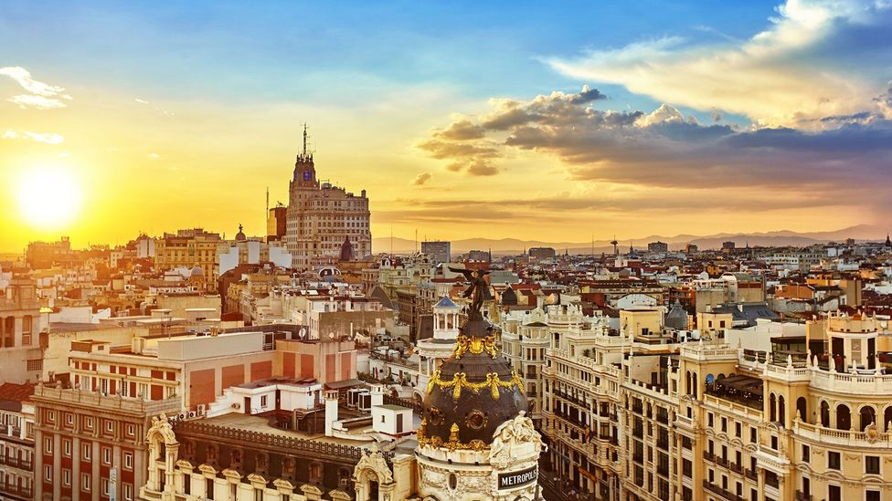

10 Most Visited Countries in the World:
1. France: 89 Million Visitors:
France is the most visited country in the world with a record breaking of 89 million visitors in 2019!

Patched up with idyllic villages and romantic cities, France wears its culture in both iconic landmarks and ordinary settings. Few have the audacity to gild everything in gold, but the country's noble castles, villas and cathedrals pull off ostentatious decor with a nonchalance attributed to its long centuries of royal history.
As if to match, the village-square markets, cafe terraces, and the daily rituals of a coffee and croissant presents a genteel sort of luxury. Don't overlook its outdoors either; the lyrical forests of Corsica and the warm waters of the French Riviera are well-sought retreats for city-dwellers.
Attractions: Eiffel Tower, Palace of Versailles, French Riviera, Chamonix, Mont St-Michel, Paris Bridges.
2. Spain: 84 Million Visitors:
Passion flares in Spain, a country crafted for the good life. Maybe that's why Spain wins the 2nd place for the most visited countries in the world.
Embark on an epic road trip looping from Barcelona to Madrid - glimpses of Spain's enduring landscapes pass by like a photographer's reel. Gather around the Gothic quarters of Barcelona and browse the experimental works of Gaudi before taking off for the mysterious Alhambra in Granada, or the flamenco halls of Seville.
There is also Bilbao and San Sebastian in the north, ready to satiate your hunger with delicious pinxtos and avant-garde architecture.
For nature that transforms every season, visit the hills of Picos de Europa and snow-capped Sierra Nevada, the sandy reaches of Menorca. From coast to mountains and dry in-land outposts you'll sense that for all the history lurking in the corners, Spain lives in the moment.
Attractions: La Familia Sagrada, Park Guell, The Alhambra, El Retiro, Guggenheim Museum, Real Alcazar, Mallorca's beaches.
3. United States: 79 Million Visitors:
America has always been a popular travel destination due to its sprawl of metropolis and small town charms; last year, it welcomed a rounded-down number of 82 million visitors. With travel patterns trending towards city hopping and road tripping, America's endless highways are a siren's call.
New York City, Los Angeles, Las Vegas, Chicago, and Boston are all cities of transience, ever-evolving urban spaces that broils over with mixed cultures and cuisines.
There is then musical Austin and free-spirited Portland, a San Francisco as dynamic as its coastal waves, and Miami which entertains with beaches and nightlife.
There is also the quiet heat of the Grand Canyon, the miles of lush rainforests and country lanes. And when you tune into the radio, the jazz, country, hip-hop, rock and pop keep you company through this mish-mash of sights.
Attractions: New York City, Yellowstone National Park, Arizona National Parks and Monuments, Grand Canyon, New Orleans, Miami beaches.
4. China: 66 Million Visitors:
It is impossible to capture neither China's vastness nor the breadth of its existence; it is this indelible quality that lures you in over and again.
Enigmatic and transparent at once, the country memorializes some and forgets others - beside fast-developed cities are crumbling villages, the time-worn Great Wall is unpolished against the vibrant hues of Buddhist temples, water towns some lively and some languid, gleaming metropolis a far cry from the desert-brushed fringes of the rural sprawl.
When you've had your fill of modern malls and artifact-filled museums, spare time for China's magnificent landscapes. Choose between Yangshuo's winding rivers, Hong Kong's concrete jungle-scape, haunting Mongolia deserts, and the floral crown of Qinghai Lake.
Or maybe you're better off picking at the historical intrigues within Beijing's Forbidden City, perhaps seeking out the hidden speakeasies of Shanghai. Regardless, if you come for the scenery you stay for the food; for China's culinary variations mean anything can be eaten and eaten with relish.
Attractions: Forbidden City, Great Wall, Shanghai's French Concession, Xi'an's Terracotta Warriors, Li River, Le Shan's Grand Buddha.
5. Italy: 65 Million Visitors:
The arts come to mind when we think of Italy, the 5th most visited country in this world; of the Byzantine architectures, Padua's frescoes, Michelangelo's David and the greatest of Da Vinci's works.

Heritage sites are the norm and not minority, remnants of ancient Rome and subsequent empires left in form of ruins, archeological sites, churches and manors. Attention to aesthetics translates in to the everyday details too - Italy is home to some of the biggest fashion minds.
On the more natural spectrum is extraordinary geological diversity. From the turquoise coral-reefs to icy Alps, Italy flourishes in blues and greens. Where nature is abundant, culinary delights follow. Indulge in the powdery dough of pizzas and pastry, filling the stomach with oysters and ricotta and topping it off with heady wines.
Attractions: Roman Forum, Tuscany's Vineyards, Ruins of Pompeii, Amalfi Coast, St. Peter's Basilica, Duomo.
6. Turkey: 51 Million Visitors:
Sultry Turkey smolders with desert heat and sun-beaten ruins, backed by the enticing thrum of bustling cities. Having been conquered by the Romans, Byzantines, and Ottomans, Turkey treks its story from fervent Istanbul to the romantic Mediterranean coast.
On the way are magical landscapes that range from jutting rock formations to glittering lakes and olive groves, Kacker Mountains, Patara Beach, and Lake Egirdir only few of its lyrical ruralscapes. Explore these settings via canyoning, kayaking, paragliding, hiking and more adventurous means; they're lessons in the physical and cultural, and make Turkey one of the most visited places in the world.
As if Turkey wasn't alluring enough, its culinary specialties draw from both inland and coastal sources. Spiced kebabs, oil-cooked vegetables and sweet baklava barely skim the trove of local eats.
Eat hearty and smile plenty.
Attractions: Topkapi Palace, Suleymaniya Mosque, Aya Sofya, Bergama Acropolis, Caves of Heaven and Hell, Nemrut Dagi National Park.
7. Mexico: 45 Million Visitors:
Vivid and steamy Mexico can barely contain the life of its people.
Fiesta loving in crowds and philosophical in the quiet, the local community is empathetic hosts with fierce pride in their country. It is this pride and expressive nature that allowed for architectural triumphs (in both Teotihuacan pyramids, Maya temples and colonial towns) as well as masterful art, home to the likes of Frida Kahlo and Diego Rivera.
Underground artistic movements have also brought dance and street art to the fore.
Beyond the city's endless cultural riches are also eye-catching jungles, volcanoes, deserts and coast. Mexico's boundless nature offers adventures for both hikers and divers. Scale Oaxaca's mountainous ridges or dive deep into the Caribbean to embrace all it has on platter.
Attractions: Tulum, Cabo Pulmo, Palenque Ruins, Teotihuacan, Palacio de Bellas Artes, Edzna, Oaxaca City.
8. Thailand: 39.7 Million Visitors:
The spiritual and celestial guide many of Thailand's cultural practices, prophesying the intertwining of sacred spaces and nature.
As you trail the splendid estates of gleaming temples and intricate shrines, you'll stumble over the roots of ancient banyan trees, past green-framed Buddhas, and other floral offerings. Nature is never far. Thailand's rural heartland comprises of deep caves, majestic waterfalls, beautiful rice terraces, and oscillating hills.
Chaotic city-life and serene farmland aside, visitors come for Thailand's dynamic coast. Over a thousand islands dot its shores, gentle waters giving life to corals and whale sharks. Sea cliffs and sand strips invite outdoorsy travelers to stay and play, whereas the holiday towns of Ko Tao, Ko Samui and Ko Phi-Phi hard-sell with relaxing massages and tropical cuisine.
Attractions: Wat Pho, Grand Palace, Chiang Mai, Erawan National Park, Phuket region.
9. Germany: 39.5 Million Visitors:
Germany may be remembered as the set of horrific tragedy, but it is also the birthplace of great thinkers, inventors and creatives who ushered in the modern era. From the contemporary architectures by Frank Gehry and Daniel Libeskind to lofty museums and automobile factories, you can track the country's cultural footprints.

Cast your eyes beyond the Romanesque and Baroque build of Berlin, Munich, and Hamburg to see the swaying path into rural Germany. The valleys unfold into imposing forests and vast vineyards, reaching towards northern dunes and chilly Alps. Stretch your senses - eyes and tongue - to taste Germany's regional diversity.
Attractions: Pergamon Museum, Schloss Neuschwanstein, Zwinger, Kolner Dom.
10. United Kingdom: 36 Million Visitors:
Afternoon tea, posh accents and of course, the Queen, have built the UK into an image of refined elegance, and made it in this Top 10 of the most visited countries in the world. There is also the moody Scotland and Wales, and down-to-earth Northern Ireland. Combining the historical sites of local flavor under the "United Kingdom" banner, we have ourselves a myriad of landing points.
Travel out of center London and other major cities to engage with ancient soil.
Great Britain's outskirts bellow with history, trajectory pieces together by Neolithic stone circles, crumbling castles and forts, Roman baths and new-age museums.
Scotland is the wildlands, bridging the lofty lochs and tumbling isles with chains of plain but imposing fortresses and what were once battlegrounds.
Northern Ireland in contrast is clinking pints and hip cities, drawing from both modern Britain and Scottish highlands.